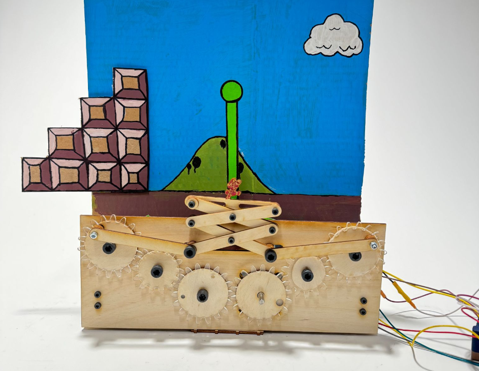
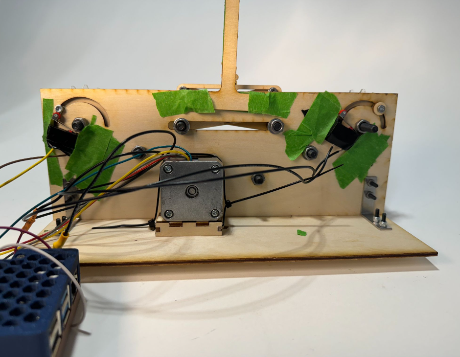
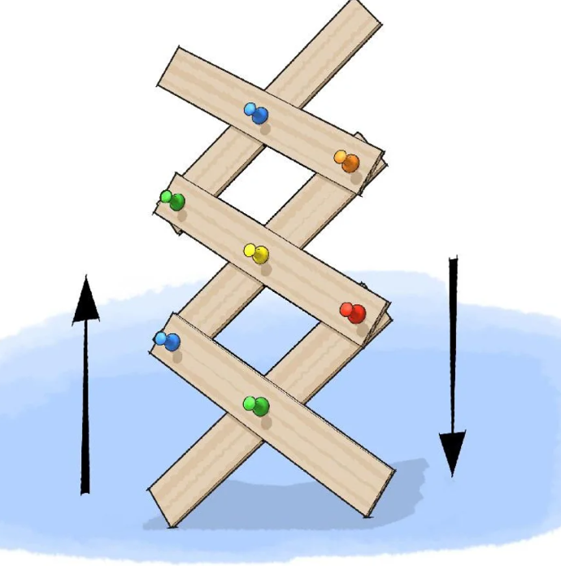
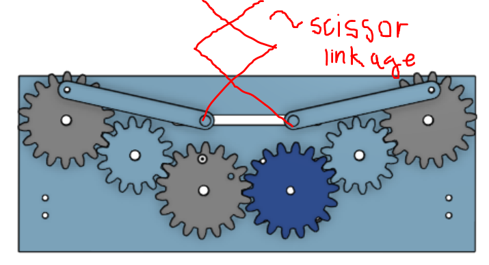
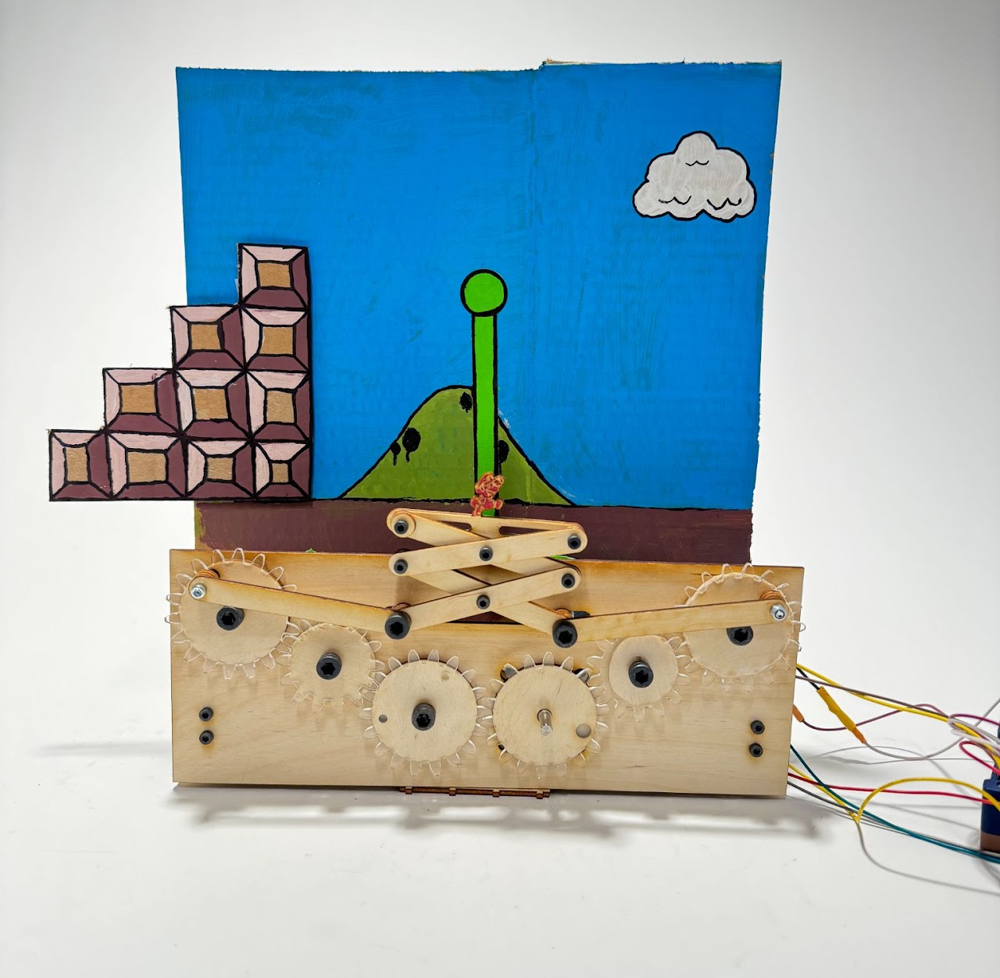
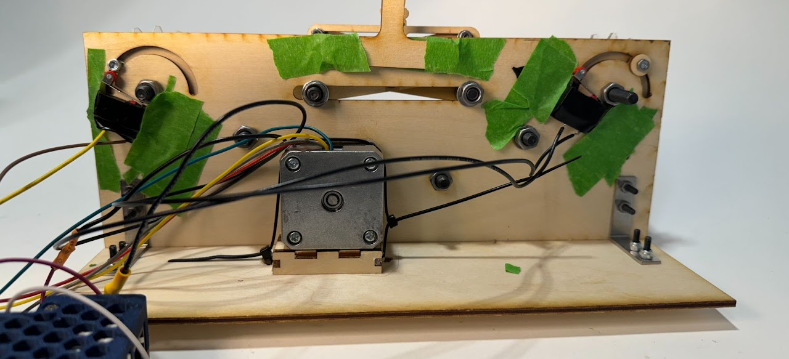

Homework2: Flag Pole


Goal:
Design and build a linkage system that translates rotational motion into 10cm of linear motion.
Solution:
I worked with Juliette Kilgore and Paul Galvan to design a geared linkage system that converts the rotational motion of a stepper motor into vertical linear motion that is constrained by two limit switches.
Our initial thought was to build some sort of scissor linkage like that depicted in the image below. We would fix one of the 'driving linkages' to a linkage from the motor and the other would be attached to a wheel with a large mass so that as the motor spun the other driving linkage would remain on the correct plan and produce motion in the vertical direction that we intended.

Image from: https://www.scientificamerican.com/article/build-a-cardboard-scissor-lift/
We quickly realized, however, that leaving one 'driving linkage' fixed and the other free would result in horizontal as well as vertical translation. Therefore, in order to make the scissor linkages output only vertical we had to drive both sides of the scissor linkage at the same time with the same speed -- the solution? Gears!!!
We sped up the gear design process using an online gear generator. After several iterations, here is the final design that we came up with:

And after some assembly and decoration, the final product:

The other interesting aspect of this project is the limit switches -- in order to confine the linear motion of the system to the specified 10cm we placed limit switches on the back of the mounting panel that when activated by the bolts that join the linkages to the gears, either reverse the motion of the system or stop the system motion all together:

Here are a couple videos that show the system at work and also the 'behind the scenes' work done by the limit switches: